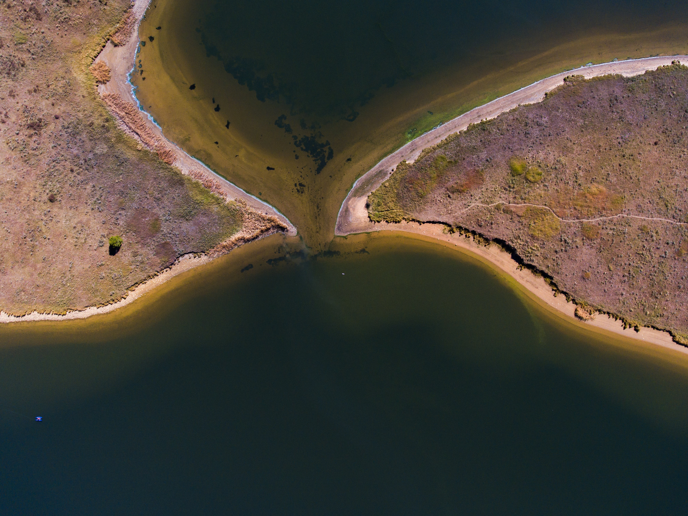

Topographic LiDAR facilitates the direct measurement of the ground surface and objects
above the ground, providing accurate elevation models of all ground types.
The 3D model created by topographic LiDAR provides information on ground elevation, as
well as any objects on the ground. Allowing topography, built structures, and vegetation all to
be mapped precisely in three dimensions.
Forestry Management Solutions
VTACK has developed a Forest Management Solution service, integrating Enhanced Forest Inventory
with LiDAR terrain and surface products. Our Forest Management Solution offers forestry professionals the
combination of forest metrics and terrain data that lead to an overall improved management strategy and efficient
operations on the ground.

Topobathymetric LiDAR
Aerial topobathymetric LiDAR is an effective tool, which extends the reach of topographic LiDAR. It is used to collect elevation
data from coastlines, estuaries, rivers and other non-navigable shallow water. The potential for simultaneous topobathymetric LiDAR
and aerial imagery collection yields a complete package to get the most information out of your area of interest.